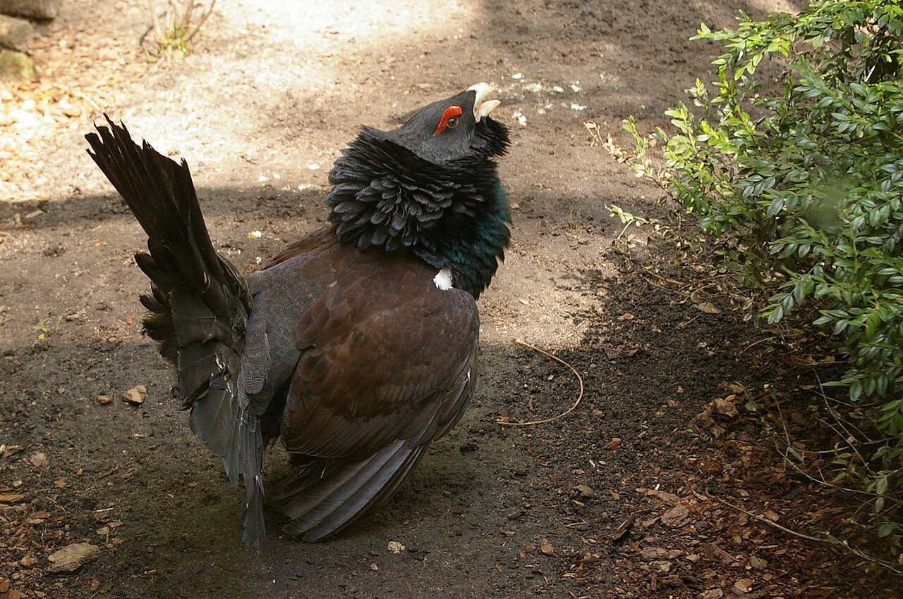
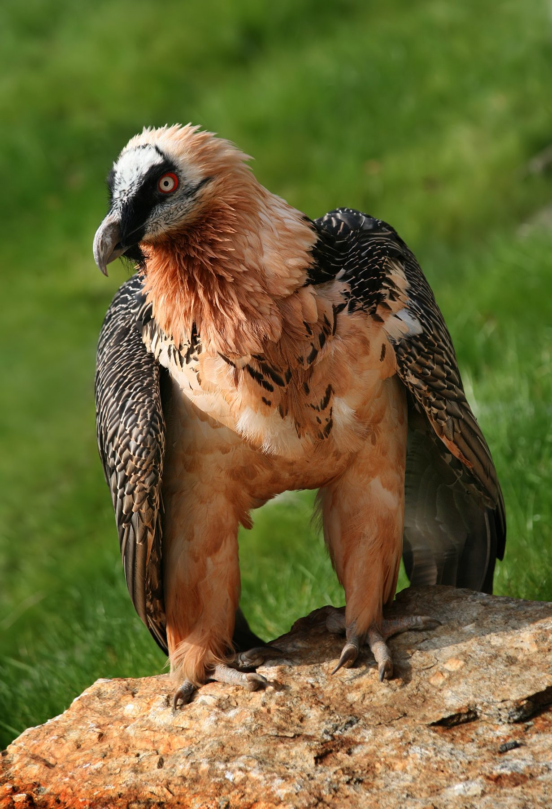

Especies protegidas y en peligro de extinción
Criterios: PN 2.2, PN 5.1, PN 7.3
🤔 Pienso5 min
Qué hago aquí: Piensa un momento y contesta con lo que ya sabes. No pasa nada si no lo sabes: es para empezar.
Los dinosaurios se extinguieron hace 66 millones de años. ¿Pueden extinguirse hoy animales de Cantabria? ¿Por qué?
📖 Leo y aprendo15 min
Qué hago aquí: Lee despacio, mira los dibujos y los ejemplos, y quédate con la idea clave del final.
Una especie está en peligro de extinción cuando quedan tan pocos individuos que puede desaparecer. Sus principales amenazas son:
Las especies amenazadas se recogen en catálogos (uno de España y otro de Cantabria) que las clasifican según su riesgo: en peligro de extinción (el más grave) o vulnerable. Estar en el catálogo obliga a hacer un plan de recuperación.

Foto: Piastu · CC BY-SA 4.0 · Głuszec (Tetrao urogallus), łódzkie zoo.jpg

Foto: Richard Bartz , Munich aka Makro Freak · CC BY-SA 2.5 · Bartgeier Gypaetus barbatus front Richard Bartz.jpg
✏️ Hago25 min
Qué hago aquí: Haz las actividades en orden. Empieza siempre por las básicas.
Explica la diferencia entre una especie en peligro de extinción y una vulnerable. ¿Qué obligación tiene la Administración cuando una especie entra en el catálogo?
Relaciona cada especie con su principal amenaza y explica por qué: oso pardo, urogallo, desmán ibérico, quebrantahuesos.
El oso pasó de menos de cien ejemplares a varios cientos. Escribe tres medidas que lo han hecho posible.
El desmán es un indicador de la calidad del agua. Explica qué significa y pon otro ejemplo de indicador que hayas visto en la unidad.
Lee la curiosidad sobre los bulos. Escribe tres preguntas que harías antes de compartir una noticia sobre el lobo o el oso. ¿Qué fuentes serían fiables y cuáles no?
Los ganaderos sufren daños de lobos y osos. Prepara un debate: escribe dos argumentos de un ganadero, dos de un biólogo y una propuesta que podría satisfacer a los dos.
Elige una especie amenazada y redacta su «plan de recuperación» con cuatro medidas concretas: hábitat, vigilancia, educación y seguimiento científico.
🚀 Amplío (si quieres saber más)
Qué hago aquí: ¿Has terminado? Lee la curiosidad o elige el reto. Es voluntario.
Busca los datos de la población de oso pardo cantábrico en varios años (por ejemplo, 1990, 2000, 2010 y el último disponible). Haz un gráfico de líneas, calcula cuántas veces ha aumentado y explica qué hechos coinciden con los cambios de la gráfica. Cita la fuente.
✅ Compruebo5 min
Qué hago aquí: Contesta sin mirar la ficha y marca cómo lo llevas.